Vào lần đầu
Ai cũng làm đượcBa bước, khoảng một phút. Không cần ai gửi gì cho bạn trước — tên và số điện thoại của bạn đã có sẵn trong danh sách Ban tổ chức phát ngày 15/8.
Gõ tên mình
Mở k3vaceo.cuongngo.app rồi bấm Đăng nhập. Gõ tên —
không dấu cũng ra, gõ "tran hoang ha" là tìm thấy.
Cả 134 người trong lớp đều tìm được tên mình ở đây, không riêng Nhóm 6. Danh sách hiện kèm tên nhóm để bạn khỏi bấm nhầm người trùng tên.
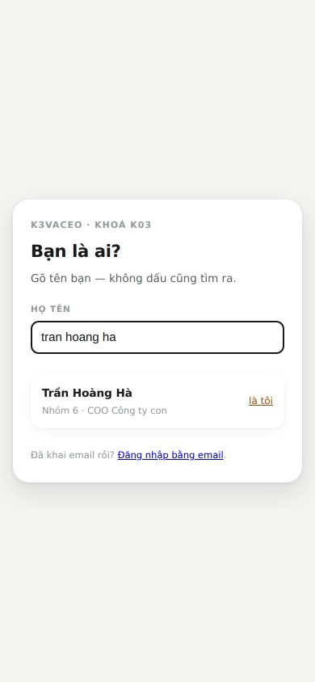
Nhập số điện thoại để chứng minh đúng là bạn
Ban tổ chức đã có sẵn số này. Ứng dụng không gửi gì tới số của bạn — chỉ đối chiếu cho khớp. Tên thì cả lớp ai cũng biết, số thì không, nên số đóng vai mật khẩu của bước này.
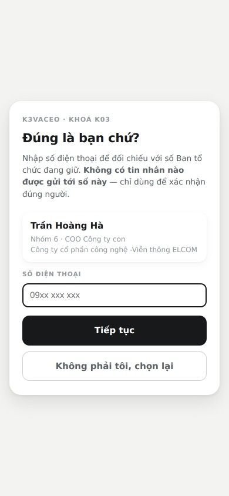
Khai email rồi nhập mã 6 số
Ứng dụng gửi một mã 6 số tới email bạn vừa khai. Nhập mã là xong — bạn có phiên đăng nhập dùng được 90 ngày, không phải làm lại mỗi lần mở.
Mã sống 10 phút, dùng một lần, nhập sai quá 5 lần thì mã chết và bạn xin mã mới. Nếu không thấy thư, xem cả mục Spam.
Vì sao là mã 6 số chứ không phải bấm vào link trong thư: bấm link trong ứng dụng Gmail sẽ mở bằng trình duyệt nội bộ của Gmail, và phiên đăng nhập rơi vào đó chứ không vào Safari hay Chrome — bạn quay lại thì vẫn chưa đăng nhập. Gõ 6 số thì không dính chuyện ấy.
Sáu tab, mỗi tab một việc
Ai cũng làm đượcThanh dưới cùng có sáu tab. Không có menu ẩn, không có tầng thứ hai. Ở khổ điện thoại chỉ tab đang mở giữ chữ, năm tab kia còn biểu tượng — chạm vào tab nào thì chữ hiện ra ngay tại đó.
Hôm nay — mở lên là biết phải làm gì
Trên cùng là một việc duy nhất ứng dụng nghĩ bạn nên làm ngay bây giờ. Làm xong nó đổi sang việc tiếp theo. Dưới đó là thông báo của lớp và của nhóm.
- Cả lớp — Ban cán sự lớp đăng, 134 người cùng thấy.
- Riêng nhóm — trưởng nhóm đăng, chỉ nhóm bạn thấy.
Có tin chưa xem thì tab Hôm nay có một chấm đỏ nhỏ. Vào xem là tắt.
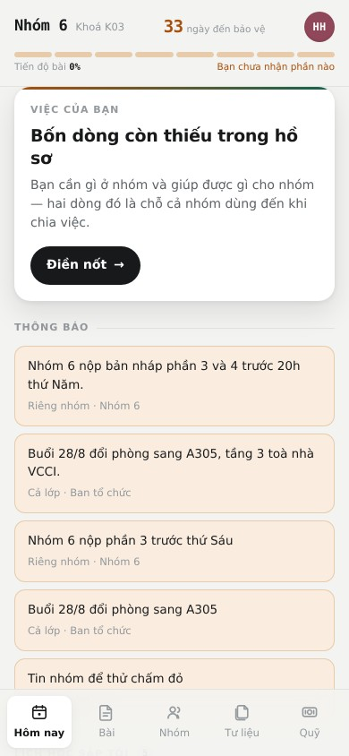
Lịch học — thứ Zalo hay làm trôi mất
Cuộn xuống tiếp ở tab Hôm nay là lịch học sắp tới: ngày, giờ, chủ đề, giảng viên. Ban tổ chức gửi lịch qua Zalo mỗi tuần và tin nhắn ấy trôi mất sau hai ngày — đây là chỗ chốt lại.
Buổi đã dời thì lịch hiện ngày mới, không phải ngày cũ. Đây không phải điểm danh.
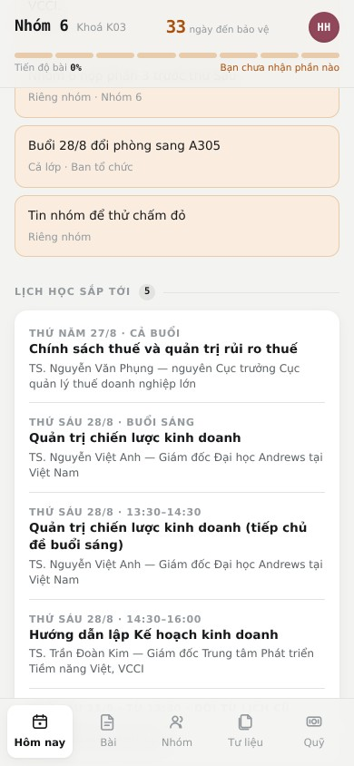
Bài — tám phần và ai nhận phần nào
Bài bảo vệ chia làm tám phần. Mỗi phần có yêu cầu, người nhận, và phần trăm hoàn thành. Chưa ai nhận thì hiện chưa ai nhận — bấm vào để nhận.
Trên cùng là cách chấm điểm: 40% thuyết trình, 60% bài viết. Nhóm phải chốt sản phẩm và khách hàng mục tiêu trước, vì bảy phần sau đều dựa vào đó.
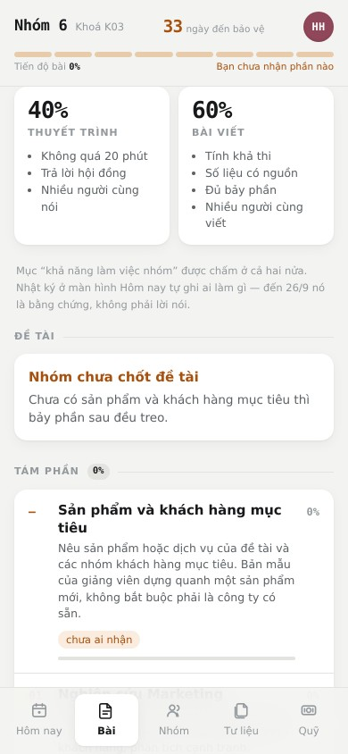
Danh bạ — hồ sơ của từng người
Hai thẻ: Nhóm (mở sẵn, là chỗ có mọi nút bấm) và Cả lớp (toàn bộ học viên khoá K03, chỉ để tra). Chạm vào một người để mở hồ sơ: liên hệ, chức vụ, và bốn dòng bán gì · bán cho ai · cần gì ở nhóm · giúp được gì.
Ở thẻ Cả lớp, số điện thoại của người chưa đăng nhập lần nào hiện
dạng che 097****857. Họ vào ứng dụng lần đầu xong là số hiện đủ — số ấy đang là
chìa khoá vào hồ sơ của chính họ, nên chưa vào thì chưa bày ra.
Ai cũng tự sửa được hồ sơ của mình, không phải xin ai duyệt. Sửa hộ người khác cũng được — rồi báo lại chính chủ.
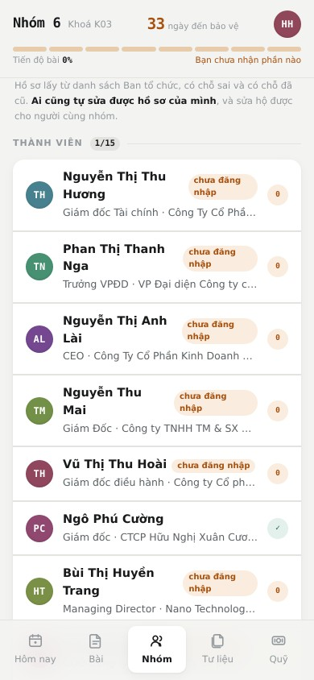
Tư liệu — chỉ giữ đường dẫn, không giữ file
Hai mục: Tư liệu của lớp (Ban cán sự lớp đăng, cả mười nhóm cùng thấy) nằm trên, Tư liệu của nhóm nằm dưới.
Ứng dụng không chứa file. File vẫn nằm ở Drive của người làm ra nó; đây chỉ giữ đường dẫn. Nghĩa là ai sửa file gốc thì mọi người mở ra đều thấy bản mới nhất — không có chuyện mười nhóm giữ mười bản khác nhau.
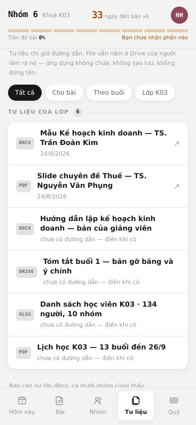
Trợ lý KHKD — hỏi cho ra bài, không viết hộ bài
Ai cũng làm đượcTrong tab Bài có thẻ Trợ lý KHKD. Nó không phải ô chat để hỏi linh tinh — nó là một người phỏng vấn: đọc bài nhóm đang có, đối chiếu với yêu cầu của giảng viên, chỉ ra chỗ hở, rồi hỏi từng câu một cho tới khi anh chị tự viết ra được phần bài của mình.
Mở như thế nào
- Vào tab Bài, cuộn tới thẻ Trợ lý KHKD, bấm Mở phiên mới.
- Hoặc mở đúng một phần: chạm vào phần bài → Hỏi trợ lý về phần này. Cách này tốt hơn, vì trợ lý sẽ soi đúng phần ấy thay vì bàn chung chung cả bài.
- Phiên là của cả nhóm. Ai trong nhóm cũng mở lại đọc được và hỏi tiếp vào đó — nhóm nào cũng chia nhau viết bài, nên không ai phải kể lại cho người kia nghe.
Nhóm khác không đọc được phiên của nhóm mình, và ngược lại.
Một phiên trông như thế này
Nhóm giả định đang viết Phần 1. Nghiên cứu Marketing, đề tài là suất ăn công nghiệp cho nhà máy trong khu công nghiệp.
Phần 1. Nghiên cứu Marketing — soi khoảng trống
Đã có: ghi chú của nhóm nói sản phẩm là suất ăn công nghiệp cho nhà máy trong khu công nghiệp. Tiến độ 25%.
Còn thiếu so với yêu cầu của giảng viên: quy mô phân khúc, tốc độ tăng trưởng, nhu cầu và hành vi khách hàng, phân tích cạnh tranh — hiện chưa có dòng nào.
Cổng đang hở: 02 SỐ (chưa có con số nào), 03 NGUỒN (chưa có nguồn nào), 04 LOGIC (chưa nối được sang kế hoạch bán hàng).
Tôi sẽ hỏi anh/chị từng câu để lấp các khoảng trống này.
Câu 1: Phân khúc khách hàng anh/chị nhắm tới là nhà máy như thế nào, ở đâu, và hiện có bao nhiêu nhà máy như vậy?
Gợi ý cách trả lời: “Phân khúc của chúng tôi là [loại nhà máy] tại [khu công nghiệp/tỉnh], quy mô từ [số] lao động trở lên, hiện có khoảng [số] nhà máy như vậy, nguồn: [ban quản lý khu công nghiệp / báo cáo nào].”
Nhà máy điện tử và dệt may ở KCN Quang Châu và Vân Trung, Bắc Giang, từ 500 lao động trở lên. Tôi đếm trên trang của Ban quản lý các khu công nghiệp tỉnh thì có 41 nhà máy đạt mức đó.
Ghi lại: FACT 41 nhà máy từ 500 lao động trở lên tại Quang Châu và Vân Trung, nguồn Ban quản lý các khu công nghiệp tỉnh Bắc Giang.
Chỗ hở: 41 nhà máy là thị trường anh/chị chạm tới được, chưa phải thị trường giành được. Hội đồng sẽ hỏi ngay: trong 41 nhà máy đó bao nhiêu đang tự nấu, bao nhiêu đã ký với nhà cung cấp khác, hợp đồng còn dài bao lâu. Không trả lời được thì con số 41 không đứng được trước hội đồng.
Câu 2: Trong 41 nhà máy đó, anh/chị biết chắc bao nhiêu nhà máy đang thuê ngoài suất ăn, và biết bằng cách nào?
Gợi ý cách trả lời: “Trong [số] nhà máy, [số] đang thuê ngoài — biết qua [hỏi trực tiếp bao nhiêu nhà máy / quan hệ nào / nguồn nào]. Số còn lại tôi chưa kiểm chứng được.”
Tôi gọi hỏi được 12 nhà máy, 9 nhà máy thuê ngoài. Còn lại tôi suy ra khoảng 70% vì tỷ lệ chung nó thế. Năm đầu tôi định lấy 6 nhà máy, doanh thu 18 tỷ.
Ba việc, xếp theo mức nguy hiểm:
- FACT 9/12 nhà máy đã hỏi có thuê ngoài. Con số này dùng được — nhưng viết rõ là đã hỏi 12 nhà máy, đừng viết “khảo sát thị trường”.
- ASSUMPTION “khoảng 70% vì tỷ lệ chung nó thế” — chưa có nguồn. Tôi không điền nguồn hộ anh/chị được, và giảng viên xếp việc bịa nguồn vào sáu lỗi làm hội đồng mất niềm tin. Hai đường: bỏ hẳn con số 70% và chỉ dùng 9/12, hoặc tìm ra nguồn thật rồi ghi tên nguồn vào bài. Anh/chị chọn đường nào?
- TARGET 6 nhà máy, 18 tỷ năm đầu. Chỗ này đang mâu thuẫn với phần sau: ghi chú Phần 4 của nhóm ghi bếp công suất 1.200 suất/ngày, mà 6 nhà máy thì cần nhiều hơn thế. Cổng 04 LOGIC đang hở đúng chỗ hội đồng hay vặn nhất.
Câu 3: Một suất ăn anh/chị bán bao nhiêu, và mỗi nhà máy đặt khoảng bao nhiêu suất một ngày?
Gợi ý cách trả lời: “Giá bán [số] đồng/suất, mỗi nhà máy đặt [số] suất/ngày, [số] ngày/tháng — con số này là [đã ký hợp đồng thật / đang đàm phán / mục tiêu].”
35.000 một suất, mỗi nhà máy khoảng 900 suất một ngày, 26 ngày một tháng. Hiện tôi đã ký 2 nhà máy rồi.
Tính lại bằng chính con số của anh/chị: 35.000 × 900 × 26 × 12 ≈ 9,8 tỷ một nhà máy một năm.
- Vậy 6 nhà máy là khoảng 59 tỷ, không phải 18 tỷ.
- Còn 18 tỷ thì ứng với khoảng 2 nhà máy — đúng bằng số anh/chị đã ký.
Con số nào là con số anh/chị mang đi bảo vệ? Hội đồng sẽ lấy đúng một trong hai và hỏi tới cùng.
Và bếp 1.200 suất/ngày ở Phần 4 chỉ đủ cho 1 nhà máy, chưa đủ nhà máy thứ hai. Cổng 05 KHẢ THI hở: hoặc sửa kế hoạch bếp, hoặc hạ mục tiêu năm đầu — việc này anh/chị chọn, tôi không chọn thay.
Trả lời xong hai chỗ này thì bấm Chốt bản thảo.
Chốt bản thảo — chỗ phiên hỏi đáp biến thành bài
Nút Chốt bản thảo ở cuối phiên dựng một bản nháp từ chính câu trả lời của anh/chị, rồi lưu thành một Ghi chú gắn vào đúng phần bài. Mở tab Bài là thấy nó dưới huy hiệu 📎, sửa được bằng thanh B / I / gạch đầu dòng như mọi ghi chú khác.
- Trợ lý không thêm con số hay nguồn nào anh/chị chưa nói.
- Chỗ nào còn thiếu nó để nguyên một dòng [CÒN THIẾU: …] chứ không lấp bằng câu văn chung chung — để anh chị nhìn ra ngay còn nợ gì.
- Cuối bản thảo luôn có mục Còn phải làm.
Chốt xong phiên vẫn mở, hỏi tiếp được. Chốt lại lần nữa thì ra một ghi chú mới.
Ba việc trợ lý cố tình KHÔNG làm
- Không bịa số liệu. Không tự nghĩ ra quy mô thị trường, phần trăm tăng trưởng, tên báo cáo, giá, sản lượng. Cần con số nào nó hỏi anh chị con số đó. Gợi ý của nó luôn là một khung có chỗ trống — bảo nó điền sẵn nó cũng không điền.
- Không chọn thay. Đánh ở đâu, bỏ cái gì là quyết định của chủ doanh nghiệp. Nó nêu các đường và hệ quả từng đường, rồi hỏi anh chị chọn.
- Không khen bài. Giảng viên dặn nguyên văn: yêu cầu AI tìm lỗi và mâu thuẫn, đừng yêu cầu nó khen. Nên đừng chờ một lời động viên — thấy hở là nó nói thẳng chỗ hở.
Giới hạn nên biết trước
- 40 lượt hỏi mỗi người mỗi ngày. Hết thì mai lại có — và người khác trong nhóm vẫn còn lượt của họ.
- 30 lượt mỗi phiên. Dài quá thì đóng phiên, mở phiên mới cho phần khác.
- Một lượt trả lời mất vài chục giây. Nút Gửi khoá lại trong lúc chờ — bấm thêm cũng không nhanh hơn, chỉ tốn lượt.
- Trợ lý báo lỗi thì trong câu báo có tên bước hỏng. Chụp nguyên câu đó gửi trưởng nhóm, đừng chỉ nói “nó không chạy”.
Nộp quỹ
Ai cũng làm đượcTab Quỹ. Ứng dụng không giữ tiền — tiền đi thẳng vào tài khoản người thu. Ứng dụng chỉ làm cho việc chuyển khoản đỡ sai và cho cả nhóm nhìn được tiến độ.
Quét mã, chuyển, rồi bấm "Tôi đã chuyển"
Mỗi đợt thu có một mã QR riêng cho từng người: quét là ngân hàng điền sẵn số tài khoản, số tiền, và nội dung chuyển khoản đã ghép sẵn tên bạn. Không phải gõ tay, không gõ sai.
Chuyển xong thì bấm Tôi đã chuyển.
Khai nhầm thì chạm lại để bỏ — chừng nào người thu chưa xác nhận.
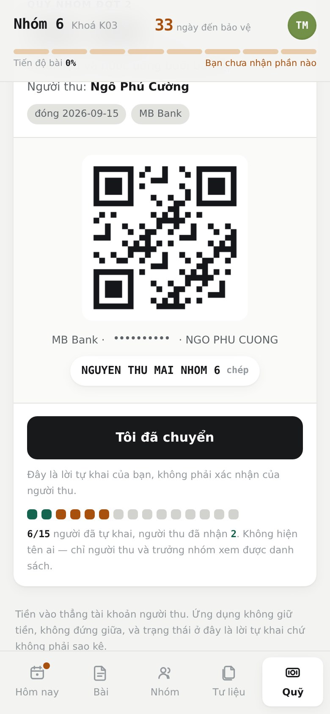
Sổ quỹ — ai cũng xem được số dư
Trên cùng tab Quỹ là số dư: người thu đã nhận bao nhiêu, mới tự khai bao nhiêu, đã chi bao nhiêu, còn lại bao nhiêu.
Hai con số đã nhận và mới tự khai để riêng, cố ý. Chỉ tiền người thu đã đối chiếu mới tính là tiền thật.
Dãy chấm dưới mỗi đợt cho biết tiến độ cả nhóm mà không hiện tên ai. Chỉ người thu và trưởng nhóm mở được danh sách tên.
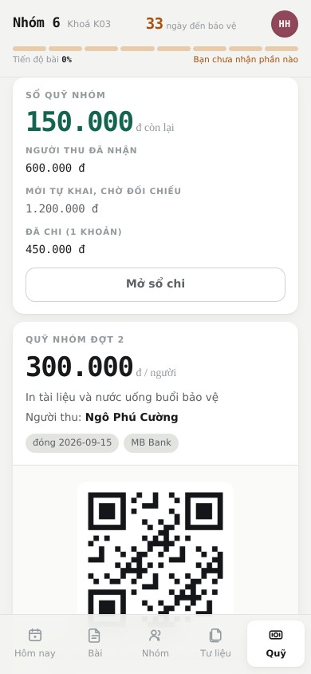
Tài khoản: passkey và thông báo
Ai cũng làm đượcChạm ảnh đại diện ở góc trên bên phải.
Passkey — lần sau vào bằng vân tay
Thêm passkey một lần, từ đó mở ứng dụng bằng vân tay hoặc khuôn mặt, không cần chờ thư.
Chỉ hiện sau khi bạn đã xác minh email. Vào bằng link mời thì bấm Gửi mã xác minh ở đây trước.
Passkey chỉ là lối vào nhanh. Email vẫn luôn là đường lui — gỡ hết passkey cũng không mất quyền vào.
Thông báo
Bấm Bật thông báo để nhận tin khi lớp hoặc nhóm có thông báo mới.
Không bật cũng không sao: chấm đỏ trên tab Hôm nay vẫn báo cho bạn, trên mọi máy.
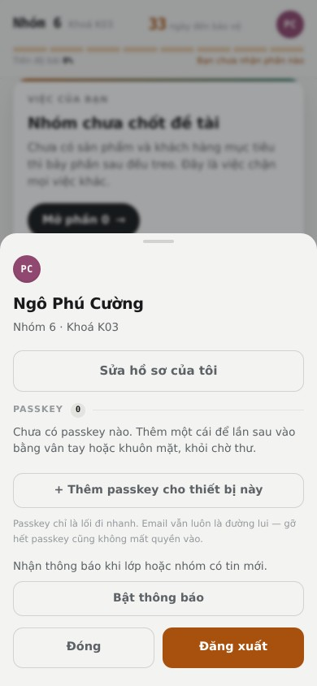
Việc của trưởng nhóm
Chỉ trưởng và phó nhómNhững nút dưới đây chỉ hiện với trưởng và phó nhóm. Người khác mở ứng dụng sẽ không thấy chúng.
Thêm người vào nhóm
Tab Danh bạ → thẻ Nhóm → + Thêm người vào nhóm. Tìm trong danh sách 134 người của lớp, gõ không dấu cũng ra.
Người đang ở nhóm khác thì màn hình cảnh báo rõ — chỉ thêm khi Ban tổ chức đã thật sự chuyển họ sang. Người đã có hồ sơ rồi thì nút bị khoá, không thêm trùng được.
Thêm xong ứng dụng đưa ngay link mời để bạn gửi qua Zalo. Danh sách gốc của Ban tổ chức giữ nguyên, không sửa.
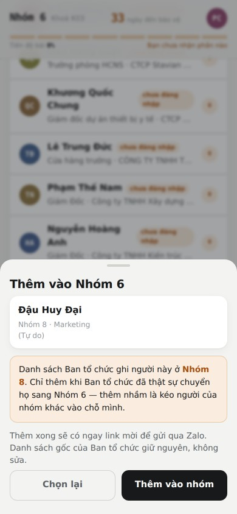
Tạo và sửa đợt thu
Tab Quỹ → + Tạo đợt thu mới. Tạo xong còn là bản nháp, chỉ bạn thấy; xem lại rồi mới bấm mở cho cả nhóm.
Đã mở rồi vẫn sửa được: bấm Sửa đợt thu trên thẻ.
| Sửa gì | Chưa ai tự khai | Đã có người tự khai |
|---|---|---|
| Ngày, tiêu đề, mục đích, cú pháp | Sửa được | Sửa được |
| Số tiền, ngân hàng, số tài khoản, người thu | Sửa được | Khoá |
| Xoá hẳn đợt | Được | Không — đóng đợt lại |
Khoá là có lý do: người ta đã chuyển tiền theo thông tin cũ. Đổi số tiền sau khi mười người đã chuyển là biến lời khai của họ thành sai.
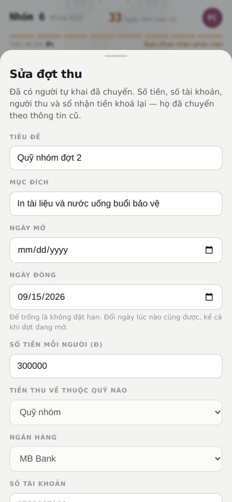
Sổ thu và khai hộ
Bấm Mở sổ trên thẻ đợt thu. Đây là chỗ duy nhất thấy được tên từng người và ai đã chuyển, ai chưa.
Khai hộ dành cho người gửi ảnh chuyển khoản qua Zalo mà chưa mở ứng dụng bao giờ. Bấm khai hộ thì sổ ghi đã tự khai · do tên bạn khai hộ — vẫn chờ người thu soi sao kê rồi mới thành người thu đã nhận.
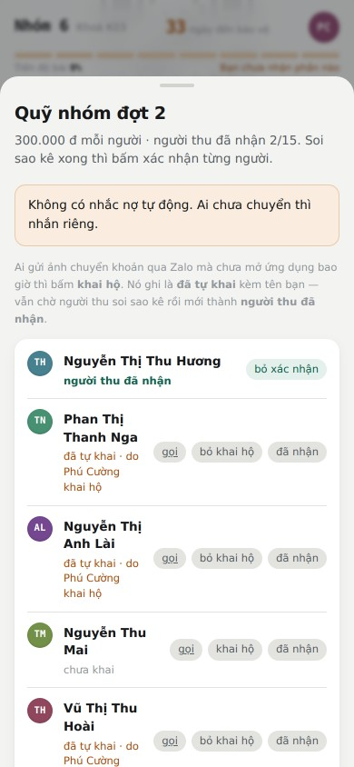
Sổ chi
Bấm Mở sổ chi trên thẻ số dư. Ghi từng khoản đã chi: tên khoản, số tiền, ngày, trả cho ai. Số dư tự trừ ngay.
Ghi nhầm thì sửa, đừng xoá — việc xoá vẫn hiện trong nhật ký nhóm.
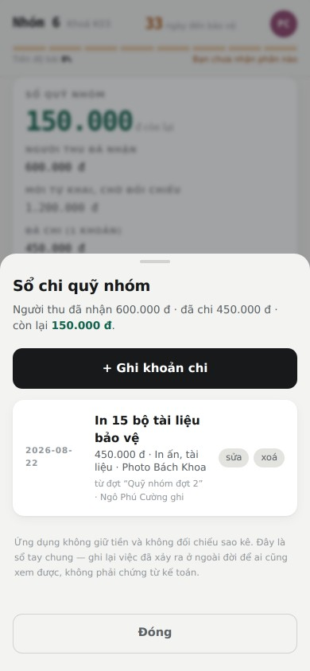
Đăng thông báo cho nhóm
Tab Hôm nay → + Thêm thông báo. Mặc định là chỉ nhóm mình.
Ai đã bật thông báo đẩy sẽ nhận ngay trên điện thoại. Đặt ngày ẩn thì quá ngày đó thông báo tự thôi hiện, khỏi phải nhớ đi gỡ.
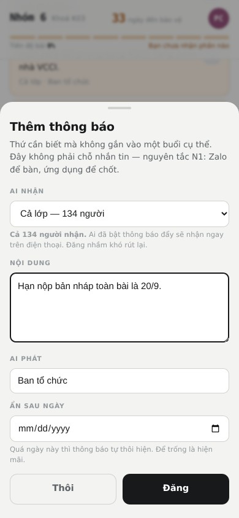
Việc của Ban cán sự lớp
Chỉ Ban cán sự lớpThêm ba việc nữa, đều ảnh hưởng tới cả 134 người. Lớp trưởng, lớp phó, thủ quỹ và uỷ viên thấy được những nút này.
Cập nhật lịch học của lớp
Tab Hôm nay → + Thêm buổi học. Ngày, giờ, chủ đề, giảng viên.
Chỗ nào thông báo chỉ ghi "buổi sáng" thì để trống ô giờ rồi ghi vào ô ghi chú, đừng bịa giờ ra.
Buổi bị huỷ thì bấm huỷ chứ đừng xoá — ứng dụng giữ lại để còn lần ra khi có người hỏi "hôm ấy rốt cuộc có học không".
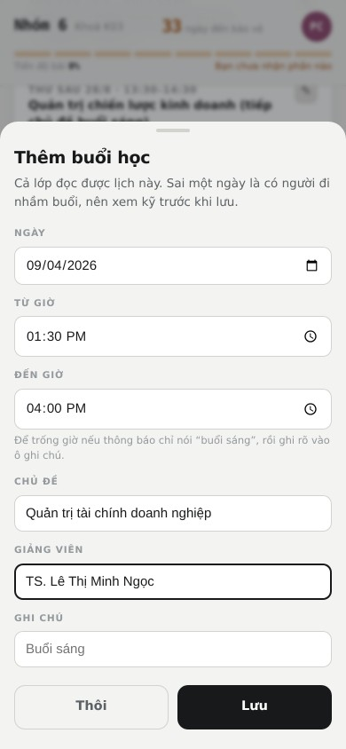
Đăng tư liệu cho cả lớp
Tab Tư liệu → + Gắn một liên kết → ô Ai thấy được chọn Cả lớp.
Dùng cho thứ Ban tổ chức phát chung: slide bài giảng, mẫu kế hoạch kinh doanh. Trước đây mỗi nhóm phải tự dán lại một bản — mười nhóm mười bản, và sai một bản là cả nhóm ấy làm theo tài liệu cũ mà không ai biết.
Mặc định vẫn là chỉ nhóm mình. Phải chủ động chọn mới đăng cho cả lớp.
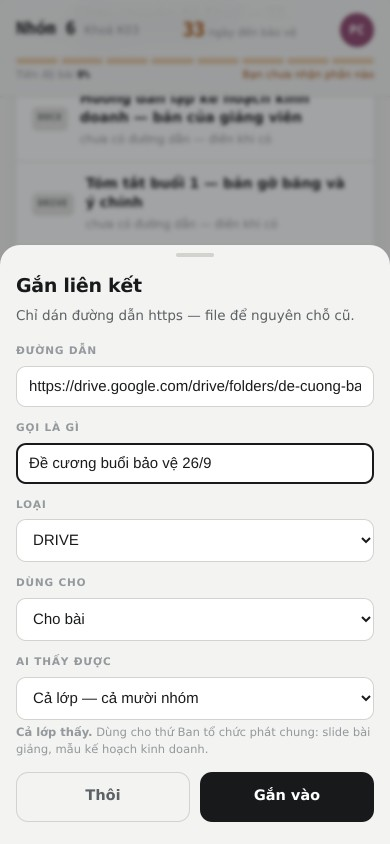
Đăng thông báo cho cả lớp, và thu quỹ lớp
Cùng nút + Thêm thông báo ở tab Hôm nay, nhưng ô Ai nhận có thêm lựa chọn Cả lớp — 134 người. Chọn xong dòng nhắc đổi thành cảnh báo, vì đăng nhầm cho 134 người khó rút lại.
Ở tab Quỹ, khi tạo đợt thu bạn có thêm hai lựa chọn mà trưởng nhóm không có:
- Đợt này thu của ai — nhóm mình, hay cả lớp.
- Tiền thu về thuộc quỹ nào — quỹ nhóm, hay quỹ lớp.
Hai câu hỏi khác nhau, cố ý tách. Nhóm bạn thu hộ quỹ lớp là chuyện thường: người đóng là 14 người của nhóm, nhưng tiền vào tài khoản thủ quỹ lớp nên phải cộng vào sổ quỹ lớp, không cộng vào sổ nhóm.
Với đợt thu cấp lớp, mỗi trưởng nhóm mở sổ chỉ thấy phần nhóm mình — đủ để đôn đốc 14 người của họ mà không phải đọc danh sách 134 người.
Ứng dụng cố tình không làm gì
Đây không phải tính năng còn thiếu. Đây là những chỗ đã cân nhắc rồi quyết định không làm, và biết trước thì đỡ đi tìm.
Trục trặc thường gặp
| Hiện tượng | Làm gì |
|---|---|
| Không tìm thấy tên mình | Gõ ngắn hơn, và gõ không dấu. Vẫn không ra thì nhắn trưởng nhóm — có thể tên trong danh sách gốc viết khác. |
| "Ban tổ chức chưa có số điện thoại của bạn" | Không phải bạn gõ sai. Xin trưởng nhóm một link mời, vào rồi tự điền số của mình ở tab Tài khoản. Từ lần sau tự đăng nhập được. |
| Số điện thoại không khớp | Có thể bạn đã đổi số từ hồi khai với Ban tổ chức. Xin link mời rồi tự sửa số. |
| Không nhận được mã 6 số | Xem mục Spam. Mã sống 10 phút; quá thì xin mã mới. Mỗi email xin tối đa 5 lần một giờ. |
| Mã QR không hiện | Mạng yếu. Kéo xuống làm mới. Vẫn không được thì chuyển khoản tay theo số tài khoản và nội dung ghi ngay dưới ô mã. |
| iPhone không cho bật thông báo | Phải cài lên màn hình chính trước, rồi mở từ biểu tượng chứ không phải từ Safari. |
| Mất điện thoại, mất link | Đăng nhập lại bằng email ở /dangnhap. Passkey cũ trên máy cũ không dùng
được nữa vì nó nằm trong máy ấy. |